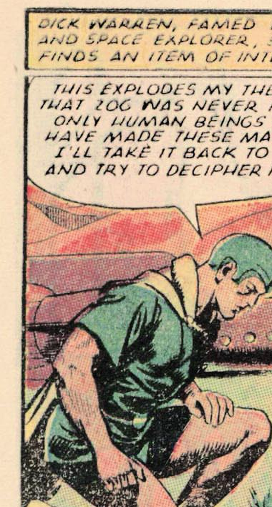
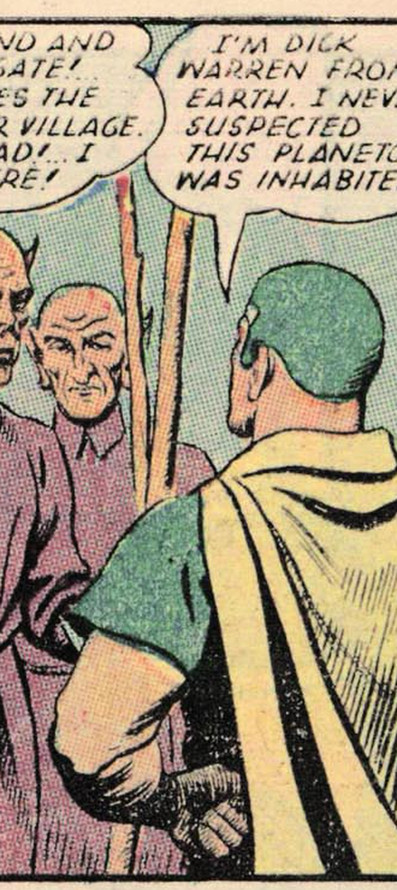
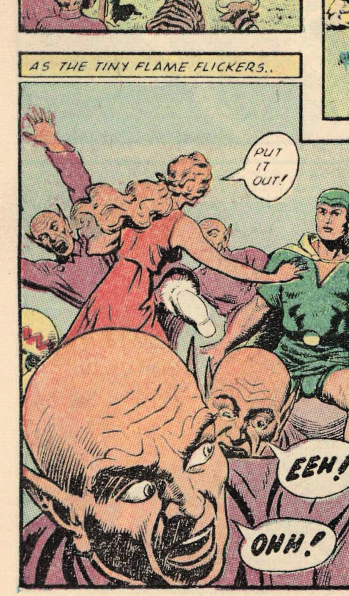
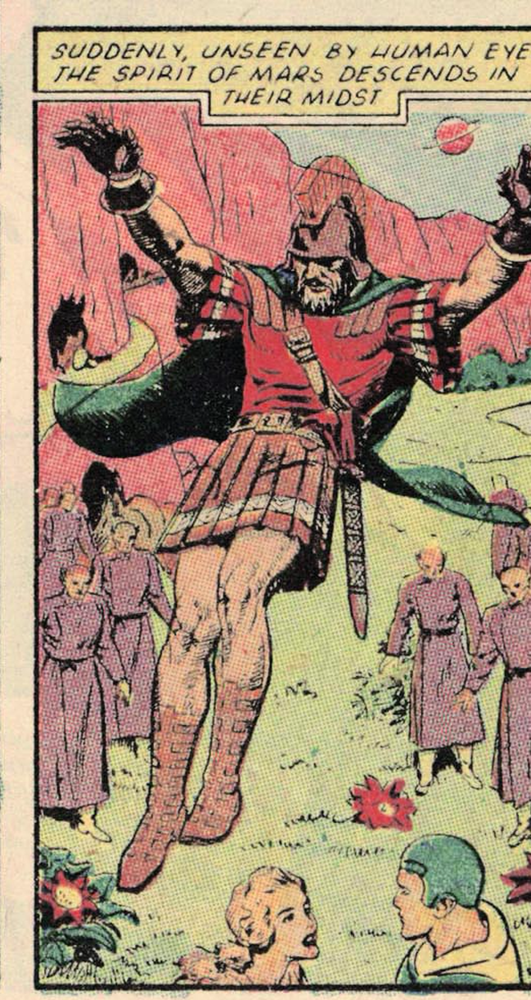

Review gate 1
Fix errors directly in work/manifests/*.json, then rerun this stage to confirm. Check: wrong speakers, weak hooks, lines assigned to the wrong panel.
ep01 - He Made a Fire and the Whole Village Panicked
hook: Opens on a cosmic war-god striding across space with a flaming torch, screaming to kill and destroy - impossible not to look.
cliffhanger: Mars has arrived unseen among the villagers - what is he about to do with them?
music: ominous

shot 1slow_pansfx: ominoushero
narrator
This is Mars, drama queen of the cosmos, and his one hobby is strolling the universe looking for people to murder.
emotion: ominous, delighted
shot 2zoom_outsfx: whoosh
narrator
Meanwhile a ship from Earth is parking on planetoid 206, completely unaware it just booked the worst vacation ever.
emotion: dry

shot 3zoom_facesfx: none
Dick Warren
This explodes my theory! Only human beings have made these. I'll take it back and try to decipher it.
emotion: thoughtful, intrigued

shot 4slow_pansfx: none
narrator
Enter a crowd of hooded purple guys. Their opener?
emotion: amused
shot 5holdsfx: none
Wad
Stranger! Stranger! We are friends!
emotion: calling out, welcoming

shot 6zoom_facesfx: none
Dick Warren
I'm Dick Warren from Earth. I never suspected this planetoid was inhabited.
emotion: plain, surprised

shot 7slow_pansfx: none
narrator
Big man Wad throws a feast, a girl named Ada serves the food raw, and our boy Dick decides these people simply must be taught fire.
emotion: dry, foreboding

shot 8zoom_facesfx: stinghero
narrator
He flicks open his little monogrammed lighter. Bad. Idea.
emotion: wince

shot 9shakesfx: impact
Ada
Put it out!
emotion: desperate, alarmed

shot 10holdsfx: none
Dick Warren
What's the matter?
emotion: concerned, urgent
shot 11zoom_facesfx: nonehero
Ada
They cannot stand the smallest flame! It draws the oxygen from their bodies and strangles them! I am different! Why, I don't know!
emotion: earnest, explaining

shot 12zoom_outsfx: ominous
narrator
And right on cue, invisible to everyone, the god of war himself drops into the middle of the crowd.
emotion: ominous, thrilled
ep02 - Ada Was the Only One With a Plan the Whole Time
hook: Picks up the instant the war-god lands, then immediately shows him hijacking a body - clear stakes, fast.
cliffhanger: Tiny creatures are swarming Dick and Ada in the dark cave - who lives inside this mountain, and are they friend or foe?
music: tense_buildup

shot 1slow_pansfx: ominous
narrator
So Mars, this washed-up war god, has just landed unseen in the village - and he spots the perfect body to steal. The leader, Wad.
emotion: gleeful, ominous
shot 2zoom_facesfx: stinghero
Mars
This is my chance to destroy a civilization! I'll enter Wad's body!
emotion: scheming, theatrical

shot 3shakesfx: impact
Wad
How dare a stranger interfere with my people? Take this!
emotion: angry, threatening

shot 4shakesfx: impacthero
Dick Warren
Earthman's fist!
emotion: shouting, triumphant

shot 5zoom_outsfx: whoosh
narrator
One good punch, and then about forty hooded guys pile on. Certified problem-solver Dick Warren, overpowered.
emotion: dry

shot 6zoom_facesfx: none
Wad
Tonight we feast on your tender Earth-man's flesh! Tomorrow we invade the Hidden People!
emotion: cruel, menacing
shot 7shakesfx: sting
Dick Warren
Cannibals!
emotion: horrified, exclaiming

shot 8slow_pansfx: none
narrator
But nobody's asked the actual MVP, Ada. She's been a slave to these people for years. And she's done.
emotion: hyped
shot 9shakesfx: impacthero
Ada
I have been a slave too long! Die!
emotion: fierce, defiant

shot 10slow_pansfx: whoosh
narrator
She cuts Dick loose and drags him toward the mountain where the Hidden People live, with the whole tribe screaming behind them.
emotion: breathless

shot 11zoom_facesfx: heartbeat
narrator
They stop in a cave to catch their breath. What they do not clock is the face watching them from the rocks.
emotion: dry, foreboding

shot 12shakesfx: impact
Dick Warren
We're trapped!
emotion: alarmed, urgent